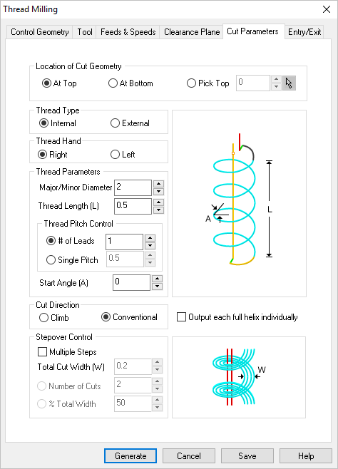
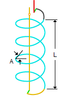
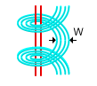
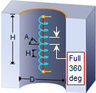

The following Cut Parameters tab allows you to define the roughing parameters for the current 2½ Axis Thread Milling operation. You can set Global Parameters, Cut Geometry parameters, Cut Direction and the Stepover and Stepdown Control via this tab of the operation dialog. The Global Parameters section allows you to set the tolerance value to be used in machining. Refer to each option below.
 Dialog Box: 2½ Axis Thread Milling |
For Thread Type, select either Internal or External. Select Internal if your Control Geometry is a circular hole. Select External if your Control Geometry is a circular boss.
|
For Thread Hand, select either Right or Left. This represents the direction of the thread (Right hand or Left hand threads). |
Select from the following options referring to the dialog graphic: |
|||||||||
Enter the Major/Minor Diameter in the field provided. This would depend on the Thread Type selected (Internal or External). For Internal, it would be the Major Diameter. For External, it would be the Minor Diameter.
Enter the total Thread Length (L) of the thread in the field provided.
For Thread Pitch Control you can choose # of Leads or Single Pitch. Either method can be used. Then enter either the total # of Leads or the Single Pitch of one thread.
For both Internal and External threads, enter thread Start Angle (A) in the field provided.
|
 Thread Parameters |
||||||||

Select Climb (Down Cut) and the tool will be maintained in a downward motion into the stock. ") Climb (Down Cut) Select Conventional (Up Cut) and the direction of the tool will be maintained in an upward motion out of the stock. ") Conventional (Up Cut)
|
 One of the basic concepts to understand in any milling operation is
One of the basic concepts to understand in any milling operation is For Stepover Control, check the box for Multiple Steps and then enter the additional stepover control parameters.  Multiple Steps With Multiple Steps checked, enter the Total Cut Width (W). The last stepover will be the final cutting pass for the thread. Total Cut Width (W) Select Number of Cuts and then enter the number in the field provided. The Total Cut Width will be divided by this number to calculate the Stepover displace. Number of Cuts When available, can check this box to Output each helix individually. This will split each helix into individual full helices of 360 degrees in the posted code.  Full 360 deg Helix Output |
Stepover |